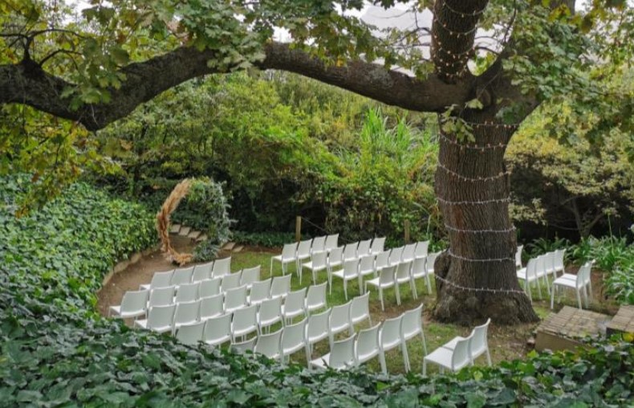
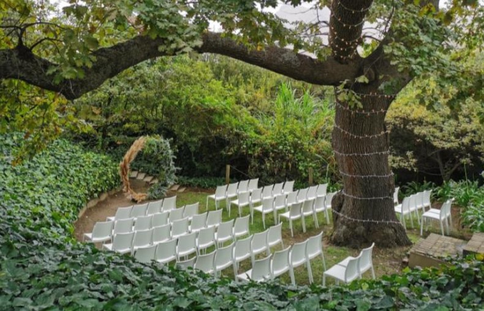

The Conservatory
 

Nestled on the banks of the Kastaiing River, The Conservatory is set among vineyards and ancient oaks, presenting an absolute hidden gem for any event of your choice. Using light and energy as key components at our facilities, a free flow of indoor/outdoor harmony is created.
Franschhoek Valley
R38 000,00
Max Guests: 60
Optional Inclusions: Coordination Package: R4 900,00 Wine & MCC corkage R 5 000,00 Pre Drinks corkage R 5 000,00 Own bar corkage R 10 000,00 Additional Ice (25kg) R 500,00
Hout Bay Manor
When it comes to choosing a romantic Cape Town wedding venue: whether you are planning an intimate wedding reception with family and close friends or a larger wedding celebration – or even a destination wedding in Cape Town’s beautiful surrounds, EAT at Hout Bay Manor is one of the most stylish and versatile venues, by far. Your guests can relax and enjoy your special day, al fresco, under magnificent old plane trees in the tranquil setting of Hout Bay Manor’s private garden. Or you can choose our glamorous and more formal indoor setting.
Hout Bay
$XXXX
Max Guests: 100
Optional Inclusions: Customized Menu and Catering